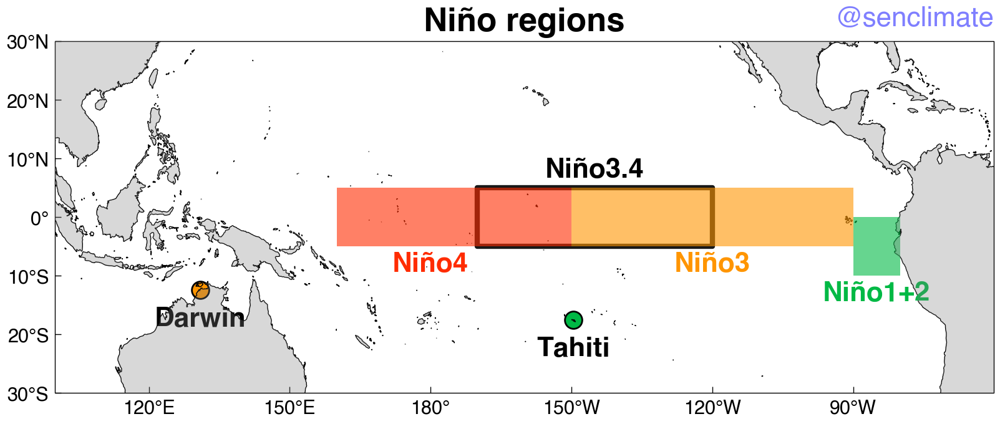
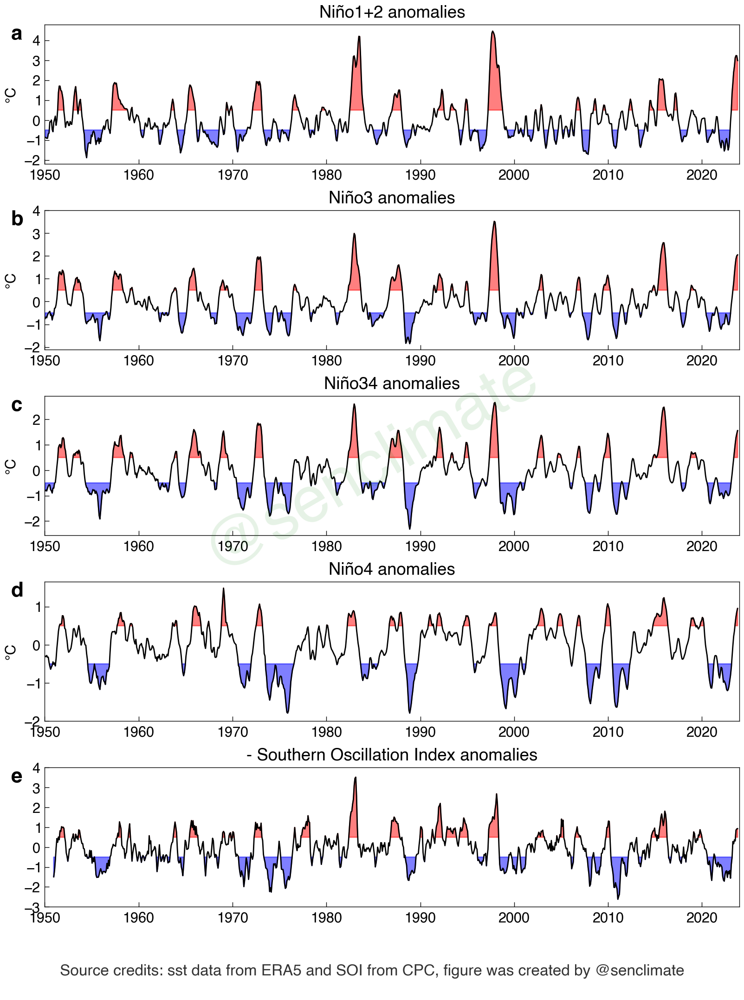
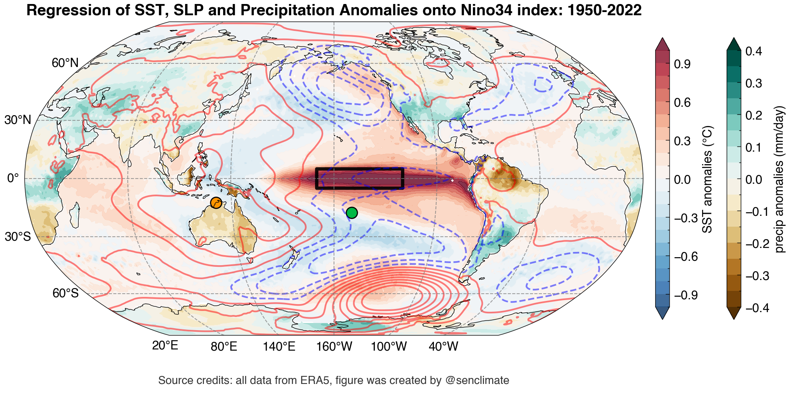
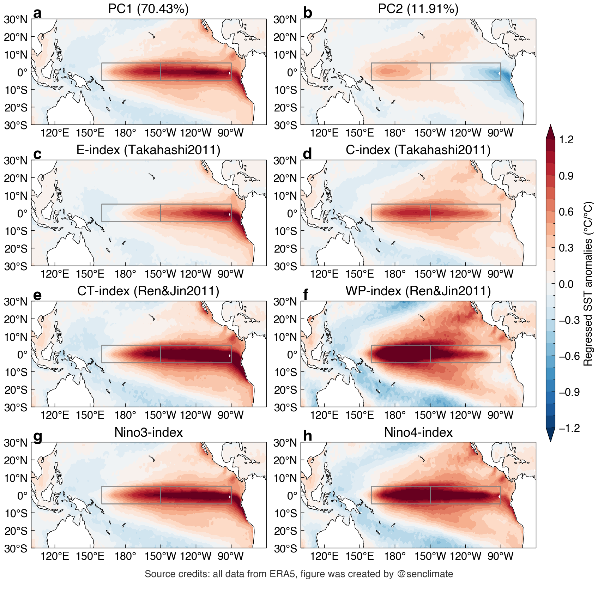
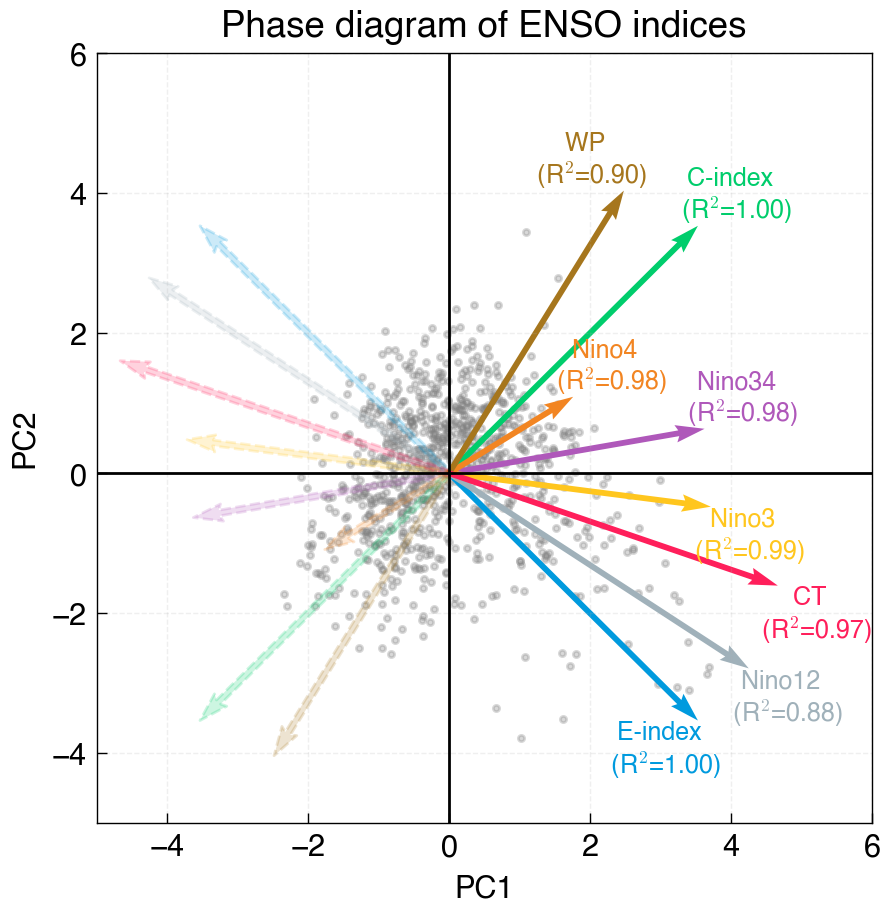
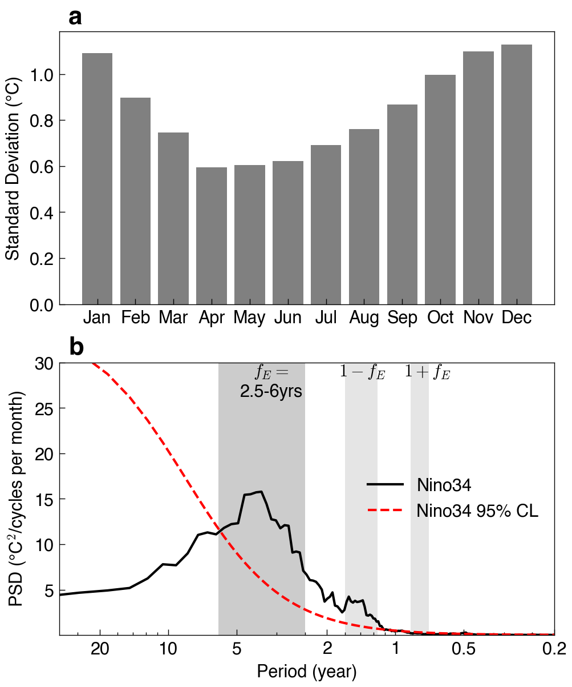

ENSO
This notebook present ENSO mode

Schematic diagrams of the three phases of tropical Pacific

Normal conditions: Equatorial winds gather warm water pool toward the west, Cold water upwells along South American coast |

El Niño conditions: Warm water pool approaches the South American coast, The absence of cold upwelling increases warming |

La Niña conditions: Warm water is farther west than usual, the cold upwelling strengthens along South American coast |
ENSO Resources¶
To be added
https://www.pmel.noaa.gov/elnino/
# load basic library
%config IPCompleter.greedy = True
%matplotlib inline
%config InlineBackend.figure_format='retina'
%load_ext autoreload
%autoreload 2
import warnings
warnings.filterwarnings('ignore')
import numpy as np
import xarray as xr
import senpy as sp
import matplotlib.pyplot as plt
plt.style.use('science')
ENSO Characteristics¶
NINO regions¶
fig, ax = sp.map_subplots(1, 1, figsize=(8, 6), proj='cyl', lon_0=200, aspect=1.25, layout='compressed')
sp.map_coastline(ax, color='black', scale='50m')
sp.map_landmask(ax, fc='gray', alpha=0.3)
ax.set_title("Niño regions", fontsize='xx-large', fontweight='bold')
# add polygon for regions
sp.map_box(ax, region='Nino34', fc='none', ec='k', lw=3, alpha=0.9)
sp.map_box(ax, region='Nino3', fc='C1', ec='none', alpha=0.6)
sp.map_box(ax, region='Nino4', fc='C3', ec='none', alpha=0.6)
sp.map_box(ax, region='Nino12', fc='C2', ec='none', alpha=0.6)
sp.map_text(ax, x=215, y=8, s='Niño3.4', color='k', fontsize='x-large')
sp.map_text(ax, x=180, y=-8, s='Niño4', color='C3', fontsize='x-large')
sp.map_text(ax, x=240, y=-8, s='Niño3', color='C1', fontsize='x-large')
sp.map_text(ax, x=275, y=-13, s='Niño1+2', color='C2', fontsize='x-large')
Tahiti_P = [360-149.6, -17.5]
Darwin_P = [130.9, -12.4]
ax.scatter(x=Tahiti_P[0], y=Tahiti_P[1], fc='C2', ec='k', s=100, transform=sp.data_crs)
ax.scatter(x=Darwin_P[0], y=Darwin_P[1], fc='C1', ec='k', s=100, transform=sp.data_crs)
sp.map_text(ax, x=Tahiti_P[0], y=Tahiti_P[1]-5, s='Tahiti', color='k', fontsize='x-large')
sp.map_text(ax, x=Darwin_P[0], y=Darwin_P[1]-5, s='Darwin', color='k', fontsize='x-large')
sp.map_ticks(ax, lon_ticks=np.arange(120, 300, step=30), lat_ticks=np.arange(-30, 31, step=10))
sp.map_extent(ax, extent=[100, 300, -30, 30])
# # Add water mark
source_text = """@senclimate"""
ax.text(1.0, 1.1, source_text, transform=ax.transAxes,
fontsize='x-large', color='blue', alpha=0.5,
ha='right', va='top', zorder=6);

Time series of ENSO Indices¶
# load ERA5
var_ds = sp.ERA5_onelevel_vars(vars=['sst', 'tp', 'msl'], time_slice=slice('1950-01', '2023-12'))
# add cyclic point
var_ds = sp.add_cyclic_point(var_ds, dim='lon')
# remove the linear trend
var_ds = var_ds.detrend(order=1, retain_mean=False)
# monthly climatology relative to 1991-2020 and anomalies
var_m = var_ds.clim.climatology(clim_slice=slice('1991-01', '2020-12')).load()
var_a = var_ds.clim.anomalies(clim_slice=slice('1991-01', '2020-12')).load()
# calculate ENSO indices
ssti = sp.pacific_sst_indices(var_a['sst'])
soi = sp.newtimeaxis( -sp.IRI_opendap(url='http://iridl.ldeo.columbia.edu/SOURCES/.Indices/.soi/.c9120/.standardized/dods').rename({'standardized':'soi'}) )
ssti_mv3 = xr.merge([ssti, soi]).rolling(time=3, min_periods=1, center=True).mean('time')
fig, axes = plt.subplots(5, 1, figsize=(8, 10), layout='compressed')
xtime = sp.time_axis(ssti_mv3.time)
index_arrs = ['Nino12', 'Nino3', 'Nino34', 'Nino4', 'soi']
index_dict = {
'Nino12': {'name': 'Niño1+2', 'yticks': np.arange(-2, 5, step=1), },
'Nino3': {'name': 'Niño3', 'yticks': np.arange(-2, 5, step=1), },
'Nino34': {'name': 'Niño34', 'yticks': np.arange(-2, 3, step=1), },
'Nino4': {'name': 'Niño4', 'yticks': np.arange(-2, 2, step=1), },
'soi': {'name': '- Southern Oscillation Index', 'yticks': np.arange(-3, 4.1, step=1), },
}
for i, ax in enumerate(axes.flat):
ind = index_arrs[i]
sp.plot_above_below_shading(ssti_mv3[ind], xtime=xtime, above=0.5, below=-0.5, ls='-', c='k', ax=ax)
ax.set_xlim([1950, 2024])
ax.set_xticks(np.arange(1950, 2025, step=10))
ax.set_title( '{0} anomalies'.format( index_dict[ind]['name']) )
ax.set_yticks(index_dict[ind]['yticks'])
if ind != 'soi':
ax.set_ylabel('℃')
sp.set_legend_alphabet(fig, axes=axes.flat, x=-0.03, y=0.8, va='bottom')
# Add water mark
source_text = """@senclimate"""
fig.text(0.5, 0.5, source_text, fontsize=50, color='green', alpha=0.1, ha='center', va='center', rotation=30, zorder=6);
# Add dataset and map sources
source_text = """
Source credits: sst data from ERA5 and SOI from CPC, figure was created by @senclimate
"""
fig.text(0.5, -0.02, source_text, fontsize=12, color='black', alpha=0.8, ha='center', va='top', zorder=6);

Spatial pattern¶
reg_ds = sp.Xlinreg(x_ds=ssti['Nino34'], y_ds=var_a, outputs=['s', 'r', 'p'], sigmask=False, fast_solver=True)
sst_anom_cdict = sp.cmap.dict_cmap_contourf(levels=np.arange(-1, 1.01, step=0.1), name='RdBu_r', extend='both')
tp_anom_cdict = sp.cmap.dict_cmap_contourf(levels=np.arange(-0.4, 0.41, step=0.05), name='BrBG', extend='both')
fig, ax = sp.map_subplots(1, 1, figsize=(10, 5), proj='robin', lon_0=200, aspect=1., layout='compressed')
imag0 = ax.contourf(reg_ds.lon, reg_ds.lat, reg_ds['s_sst'], transform=sp.data_crs, **sst_anom_cdict, alpha=0.8)
imag1 = ax.contourf(reg_ds.lon, reg_ds.lat, reg_ds.r_tp.basinmask.apply_mask(masks=['Land']), transform=sp.data_crs, **tp_anom_cdict)
# CS = ax.contour(reg_ds.lon, reg_ds.lat, reg_ds['s_msl']/100, transform=sp.data_crs,
# levels=np.arange(-2, 2.01, step=0.2), colors='red', linewidths=0.5, alpha=0.5)
cb1 = fig.colorbar(imag1, ax=[ax], location='right', shrink=0.9, pad=0.02)
cb1.set_label('precip anomalies (mm/day)')
cb = fig.colorbar(imag0, ax=[ax], location='right', shrink=0.9, pad=0.02)
cb.set_label('SST anomalies (℃)')
## Contours
slp_levels = np.arange(-2.1, 2.11, step=0.3)
# Separate the levels into positive and negative to associate specific colors.
negative_levels = slp_levels[slp_levels < 0]
positive_levels = slp_levels[slp_levels > 0]
# Create negative (blue) contours.
CS_neg = ax.contour(reg_ds.lon, reg_ds.lat, reg_ds['s_msl']/100, levels=negative_levels,
colors='blue', linewidths=1.5, alpha=0.5, transform=sp.data_crs)
# Create positive (red) contours.
CS_pos = ax.contour(reg_ds.lon, reg_ds.lat, reg_ds['s_msl']/100, levels=positive_levels,
colors='red', linewidths=1.5, alpha=0.5, transform=sp.data_crs)
sp.map_coastline(ax, color='black')
# sp.map_landmask(ax, fc='gray', alpha=0.3)
sp.map_ticks(ax, lon_ticks=np.arange(20, 380, step=60) )
ax.set_title("Regression of SST, SLP and Precipitation Anomalies onto Nino34 index: 1950-2022", fontsize=14, fontweight='bold')
Tahiti_P = [360-149.6, -17.5]
Darwin_P = [130.9, -12.4]
ax.scatter(x=Tahiti_P[0], y=Tahiti_P[1], fc='C2', ec='k', s=100, transform=sp.data_crs)
ax.scatter(x=Darwin_P[0], y=Darwin_P[1], fc='C1', ec='k', s=100, transform=sp.data_crs)
sp.map_box(ax, region='Nino34', fc='none', ec='k', lw=3, alpha=0.9)
# Add dataset and map sources
source_text = """
Source credits: all data from ERA5, figure was created by @senclimate
"""
ax.text(0.5, -0.2, source_text, transform=ax.transAxes,
fontsize=10, color='black', alpha=0.8,
ha='center', va='bottom', zorder=6);

Spatiotemporal Complexity¶
ENSO Spatial Diversity¶
from senpy.enso import ENSO_sst_indices
# EOF analysis
eof_ds = ENSO_sst_indices(var_ds.sst.load(), clim_slice=slice('1991-01', '2020-12'), time_slice=slice('1950-01', '2023-12'), reg_fields=False)
index_arrs = ['PC1', 'PC2', 'E_index', 'C_index', 'CT', 'WP', 'Nino3', 'Nino4']
index_dict = {
'PC1': {'name': 'PC1 ({0:.2f}%)'.format(eof_ds['varFrac1'].values),},
'PC2': {'name': 'PC2 ({0:.2f}%)'.format(eof_ds['varFrac2'].values),},
'E_index': {'name': 'E-index (Takahashi2011)',},
'C_index': {'name': 'C-index (Takahashi2011)',},
'CT': {'name': 'CT-index (Ren&Jin2011)',},
'WP': {'name': 'WP-index (Ren&Jin2011)',},
'Nino3': {'name': 'Nino3-index',},
'Nino4': {'name': 'Nino4-index',},
}
eofreg_ds = sp.Xlinreg(eof_ds[index_arrs], var_a['sst'].sel(lat=slice(-30, 30), lon=slice(100, 300)) )
sst_anom_cdict = sp.cmap.dict_cmap_contourf(levels=np.arange(-1.2, 1.21, step=0.1), name='RdBu_r', extend='both')
fig, axes = sp.map_subplots(4, 2, figsize=(10, 8), proj='cyl', lon_0=200, aspect=1.5, layout='compressed')
for i, ax in enumerate(axes.flat):
ind = index_arrs[i]
imag0 = ax.contourf(eofreg_ds.lon, eofreg_ds.lat, eofreg_ds['s_' + ind], transform=sp.data_crs, **sst_anom_cdict)
sp.map_coastline(ax, color='black')
sp.map_box(ax, region='Nino3', fc='none', ec='gray', lw=1., alpha=0.9)
sp.map_box(ax, region='Nino4', fc='none', ec='gray', lw=1., alpha=0.9)
sp.map_ticks(ax, lon_ticks=np.arange(120, 300, step=30), lat_ticks=np.arange(-30, 31, step=10))
sp.map_extent(ax, extent=[100, 300, -30, 30])
ax.set_title(index_dict[ind]['name'])
cb = fig.colorbar(imag0, ax=axes, location='right', shrink=0.6, aspect=35, pad=0.02)
cb.set_label('Regressed SST anomalies (℃/℃)')
sp.set_legend_alphabet(fig, axes.flat)
# Add dataset and map sources
source_text = """
Source credits: all data from ERA5, figure was created by @senclimate
"""
fig.text(0.5, 0.01, source_text, #transform=ax.transAxes,
fontsize=10, color='black', alpha=0.8,
ha='center', va='top', zorder=6);

from sklearn.linear_model import LinearRegression
# Create a figure and axis
fig, ax = plt.subplots(figsize=(5, 5))
# Reshape PC1 and PC2 for regression
base_X = np.vstack((eof_ds['PC1'], eof_ds['PC2'])).T
# Scatter plot for PC1 and PC2 data
ax.scatter(base_X[:, 0], base_X[:, 1], c='gray', fc='gray', s=5, alpha=0.3)
# Draw PC1 and PC2 axes
ax.axhline(0, color='black')
ax.axvline(0, color='black')
# Function to draw arrows
def draw_arrow(ax, label, color):
if label in ['EMI', 'CT', 'WP']:
sel_idx = ( sp.normalize(ssti[label]) ).values * 1
else:
sel_idx = eof_ds[label].values
factor = 5
# Perform linear regression
lr_m = LinearRegression().fit(base_X, sel_idx)
# Coefficients representing the direction and magnitude
sel_dir = lr_m.coef_ * np.std(sel_idx)*factor
# Calculate R^2
sel_r2 = lr_m.score(base_X, sel_idx)
ax.quiver(0, 0, sel_dir[0], sel_dir[1], angles='xy', scale_units='xy', scale=1, color=color)
ax.quiver(0, 0, -sel_dir[0], -sel_dir[1], angles='xy', scale_units='xy', linewidth=1., fc=color, ls='--', scale=1, ec=color, alpha=0.2)
if sel_dir[1]>0:
if label=='WP':
ax.text(sel_dir[0]-0.1*factor, sel_dir[1]+0.02*factor, label + " \n (R$^2$={0:.2f})".format(sel_r2), color=color, fontsize=9, ha='center')
elif label=='C_index':
ax.text(sel_dir[0]+0.1*factor, sel_dir[1]+0.02*factor, 'C-index' + " \n (R$^2$={0:.2f})".format(sel_r2), color=color, fontsize=9, ha='center')
else:
ax.text(sel_dir[0]+0.1*factor, sel_dir[1]+0.02*factor, label + " \n (R$^2$={0:.2f})".format(sel_r2), color=color, fontsize=9, ha='center')
else:
if label=='E_index':
ax.text(sel_dir[0]-0.10*factor, sel_dir[1]-0.15*factor, 'E-index' + " \n (R$^2$={0:.2f})".format(sel_r2), color=color, fontsize=9, ha='center')
else:
ax.text(sel_dir[0]+0.10*factor, sel_dir[1]-0.15*factor, label + " \n (R$^2$={0:.2f})".format(sel_r2), color=color, fontsize=9, ha='center')
for i, label in enumerate(['E_index', 'C_index','Nino34', 'Nino3', 'Nino4', 'Nino12', 'WP', 'CT']):
# draw_arrow(ax, label, color='C{0}'.format(i))
draw_arrow(ax, label, color=sp.cmap.colors11[i+1])
# Additional plot styling
ax.set_xlim([-5, 6])
ax.set_ylim([-5, 6])
ax.set_xlabel('PC1')
ax.set_ylabel('PC2')
ax.set_title('Phase diagram of ENSO indices')
ax.grid(ls='--', alpha=0.2)
# Show plot
plt.show()

ENSO Temporal Complexity¶
fig, axes = plt.subplots(2, 1, figsize=(5, 6), layout='compressed')
stdac_n34 = ssti['Nino34'].groupby('time.month').std('time')
##
ax = axes[0]
ax.bar(stdac_n34.month, stdac_n34, color='gray')
sp.set_monticks(ax, axis='x', option='b')
ax.set_ylabel('Standard Deviation (℃)')
ax = axes[1]
psd_n34, sigpsd_n34, _ = sp.pmtm( sp.normalize(ssti['Nino34']), dim='time', dt=1/12, nw=5)
ax.semilogx(psd_n34.freq, psd_n34, lw=1.5, color='k', label='Nino34')
ax.plot(sigpsd_n34.freq, sigpsd_n34, lw=1.5, color='r', linestyle='--', label='Nino34 95% CL')
per = [50,20,10,5,2,1,0.5,0.2]
xt = 1.0/np.array(per)
ax.set_xticks(xt)
ax.set_xticklabels(map(str, per))
ax.set_ylabel('PSD (℃$^2$/cycles per month)')
ax.set_xlabel('Period (year)')
ax.set_xlim([1/30, 5])
ax.set_ylim([1e-3, 30])
ax.legend(loc='right')
y_min, y_max = ax.get_ylim()
Mfreq_enso = np.array([1/2.5, 1/6])
Mfreq_fplus = 1 + Mfreq_enso
Mfreq_fmins = 1 - Mfreq_enso
ax.fill_between(Mfreq_enso, y_min, y_max, fc='gray', alpha=0.4)
ax.fill_between(Mfreq_fplus, y_min, y_max, fc='gray', alpha=0.2)
ax.fill_between(Mfreq_fmins, y_min, y_max, fc='gray', alpha=0.2)
ax.text(np.mean(Mfreq_enso), y_max, '$f_{E}=$\n2.5-6yrs', ha='center', va='top')
ax.text(np.mean(Mfreq_fplus)+0.1, y_max, '$1+f_{E}$', ha='center', va='top')
ax.text(np.mean(Mfreq_fmins), y_max, '$1-f_{E}$', ha='center', va='top')
sp.set_legend_alphabet(fig, axes)
